Roma Antiga
Expansão territorial e consolidação das bases do direito ocidental.
Escolha um país ou assunto:
Para localizar uma palavra no texto, use Ctrl+F no computador.
História e Cultura
A Itália possui um legado histórico fundamental para o Ocidente, sendo berço de impérios, sistemas jurídicos e movimentos artísticos de impacto global.
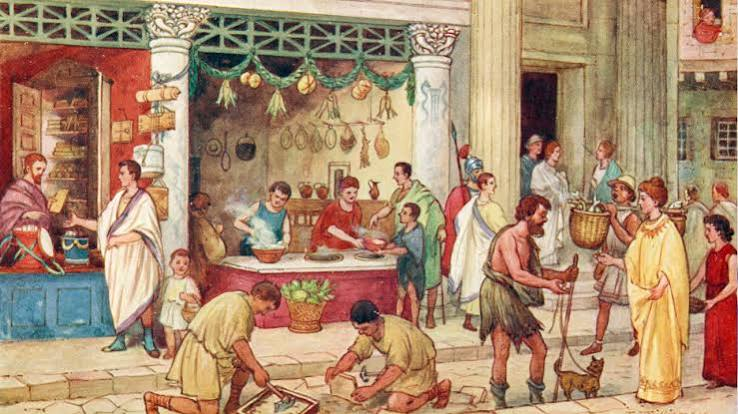
Expansão territorial e consolidação das bases do direito ocidental.
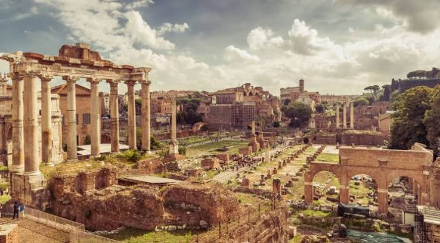
Período marcado pela descentralização política e a influência da Igreja.
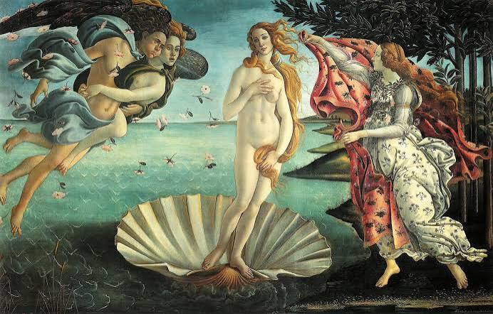
Evolução cultural e artística fundamentada no humanismo.
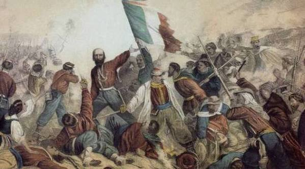
Processo do século XIX que unificou os estados da península itálica.
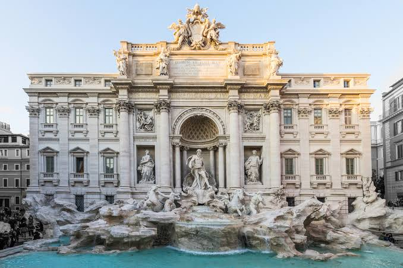
Edificações históricas caracterizadas pelo uso de colunas e simetria.
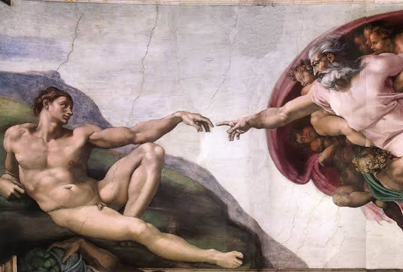
Obras focadas em perspectiva, proporção e realismo anatômico.
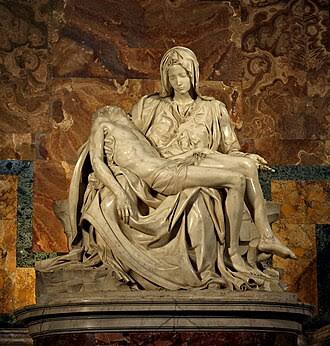
Técnica clássica de lapidação para representação humana detalhada.
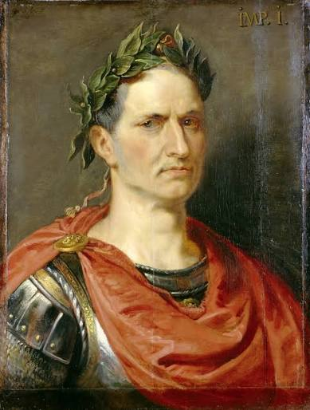
Líder militar e político fundamental na transição da República para o Império.
Polímata renascentista destacado nas artes, ciências e engenharia.
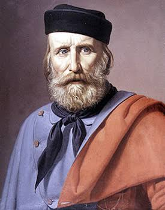
Líder militar determinante no processo de unificação italiana.
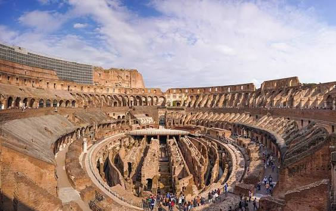
Anfiteatro romano símbolo da Antiguidade.
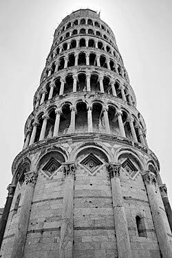
Campanário famoso por sua inclinação não intencional.
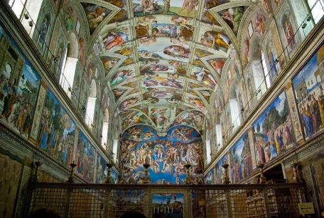
Templo famoso pelos afrescos no teto.
Culinária reconhecida globalmente pelo desenvolvimento de massas e pizzas.
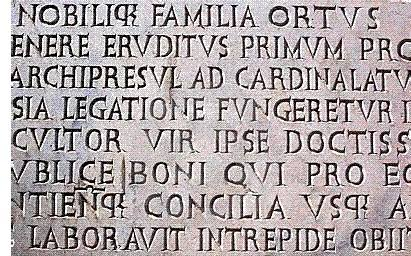
Berço do latim, idioma matriz de línguas neolatinas como o português.
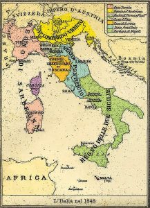
Antes do século XIX, a região era dividida em reinos e repúblicas independentes.